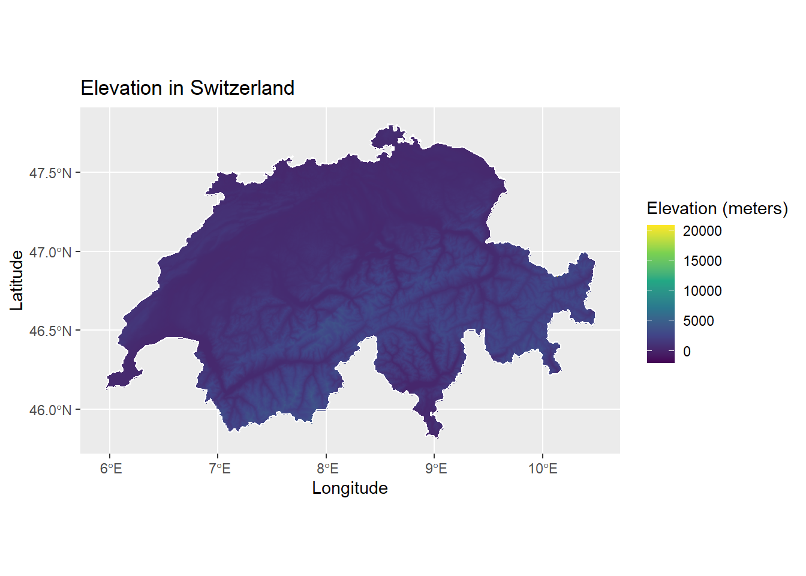
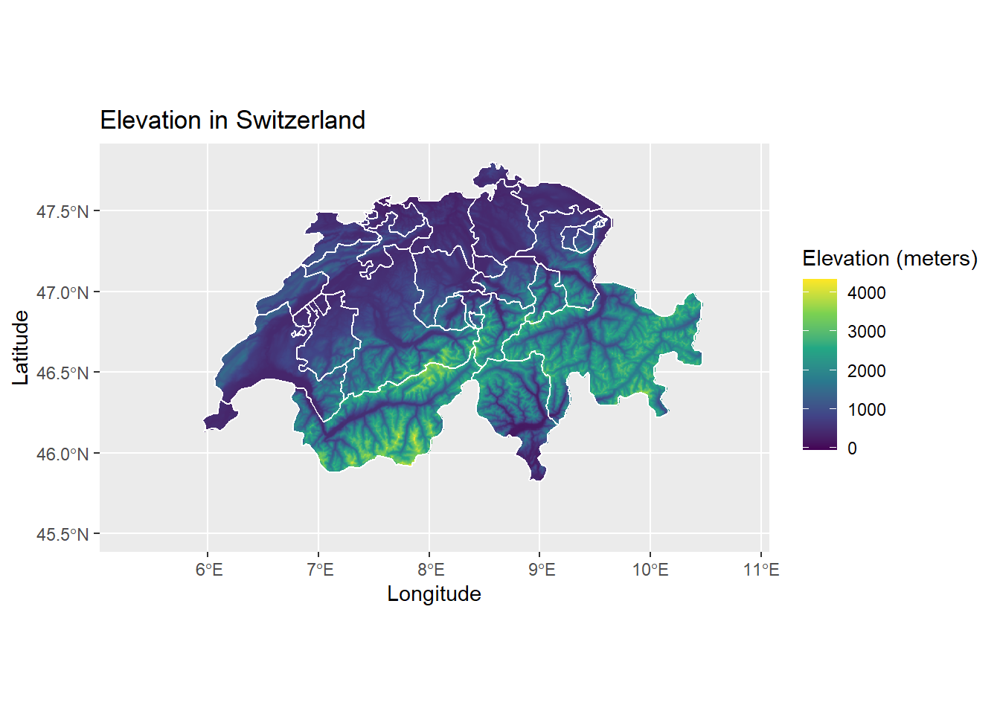

elevatr packageThis tutorial gives you a brief understanding of how to use the elevatr package for a standardized access to the elevation data from the web. The packages uses two endpoints to access its data from:
To install the elevatr package from CRAN use:
install.packages("elevatr")And for the development version, it maybe installed with devtools:
install.packages("devtools")
library(devtools)
install_github("jhollist/elevatr")Loading the elevatr package:
library(elevatr)Currently, there are two functions in this package which help users access elevation web services, namely, get_elev_point() and get_elev_raster().
The get_elev_point() function gets the point elevations using the USGS Elevation Point Query Services (for United states only) and AWS Terrain Tiles (for all global elevation data).
x and y), a SpatialPoints/SpatialPointsDataFrame, or a simple feature object (sf). It has a source argument src which indicates which API to use, either "eqps" or "aws".SpatialPointsDataFrame or Simple Feature object, depending on the class of input locations.The get_elev_point() function can be used as follows:
ll_proj <- "+proj=longlat +ellps=WGS84 +datum=WGS84 +no_defs"
elev <- get_elev_point(pt_df, prj = ll_proj)
library(kableExtra)
elev %>% kable() %>% kable_styling(bootstrap_options = c("striped","hover"))| elevation | elev_units | x | y |
|---|---|---|---|
| NA | meters | -71.82791 | 40.25963 |
| 243.79 | meters | -71.76843 | 43.05586 |
| 73.74 | meters | -71.37858 | 42.52338 |
| 86.83 | meters | -71.10417 | 42.65332 |
| 391.93 | meters | -71.56750 | 43.91346 |
The get_elev_raster() function helps user get elevation data as a raster from the AWS Open Data Terrain Tiles. The source data are global and also contain the estimations for depth for oceans.
Input: This takes in a data frame of longitude and latitude values (x and y) or any sp or raster object. It has a z argument to determine the zoom or resolution of the raster (1 to 14). It also has a clip argument to determine clipping of returned DEM. Options are "tile" which is the default value and returns the full tiles, "bbox" which returns the DEM clipped to the bounding box of the original locations, or "locations" if the spatial data in the input locations should be used to clip the DEM.
Output: Returns a raster object of the elevation tiles that cover the bounding box of the input spatial data.
We can use the get_elev_raster() function to obtain the elevation data of Switzerland, and plot it together with the country boundaries obtained by using the rgeoboundaries package as follows.
library(ggplot2)
library(raster)
library(elevatr)
library(rgeoboundaries)
library(sf)
library(viridis)
swiss_bound <- geoboundaries("Switzerland")
elevation_data <- get_elev_raster(locations = swiss_bound, z = 9, clip = "locations")
elevation_data <- as.data.frame(elevation_data, xy = TRUE)
colnames(elevation_data)[3] = "elevation"
#remove rows of data frame with one or more NA's,using complete.cases
elevation_data <- elevation_data[complete.cases(elevation_data),]
ggplot() +
geom_raster(data = elevation_data, aes(x = x, y = y, fill = elevation)) +
geom_sf(data = swiss_bound, color = "white", fill = NA) +
coord_sf() +
scale_fill_viridis_c() +
labs(title = "Elevation data of Switzerland",x = "Longitude", y = "Latitude", fill = "Elevation level(meters)")
We can also get the different administrative areas of the country Switzerland, by using the ne_states function from the rnaturalearth package. And the get_elev_raster function, you can get the elevation data. The following code does the same:
!! NOTE: increasing or decreasing the z argument will make the map zoom in and out on the country by setting the appropriate z-axis value.
library(rnaturalearth)
library(rnaturalearthhires)
sf_swiss <- ne_states(country = 'switzerland', returnclass='sf')
elevation_1 <- elevatr::get_elev_raster(locations = sf_swiss, z = 7,clip = "locations")
cropped_elev <- crop(elevation_1,sf_swiss)
elevate <- as.data.frame(cropped_elev,xy = TRUE)
colnames(elevate)[3] = "elevation_value"
elevate <- elevate[complete.cases(elevate),]
ggplot() +
#geom_sf(data = st_as_sfc(st_bbox(elevation_1)),color = "grey", fill = "grey",alpha = 0.05) +
geom_raster(data = elevate , aes(x = x, y = y,fill = elevation_value )) +
geom_sf(data = sf_swiss, color = "white", fill = NA) +
coord_sf(xlim = c(5.3,10.8), ylim = c(45.5,47.8))+
scale_fill_viridis_c()+
labs(title = "Elevation data of Switzerland",x = "Longitude", y = "Latitude", fill = "Elevation level(meters)")
elevatr repository: https://github.com/jhollist/elevatrrgeoboundaries package: https://gitlab.com/dickoa/rgeoboundariesggplot2 package: https://ggplot2.tidyverse.org/